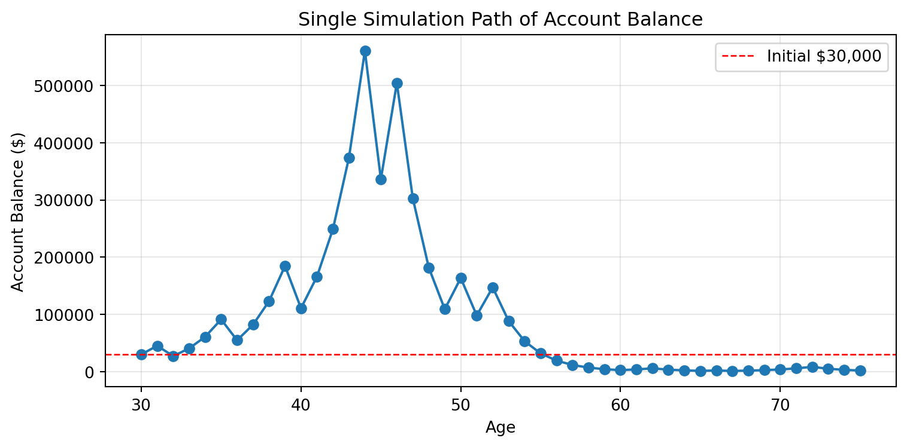
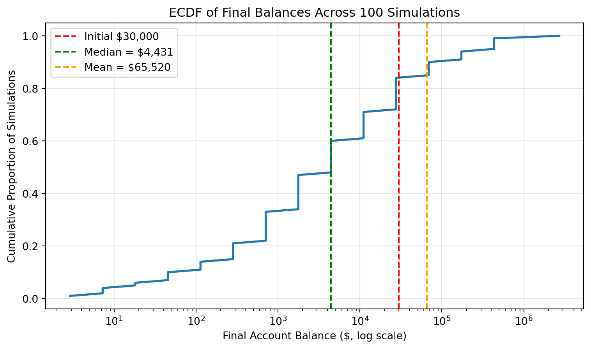
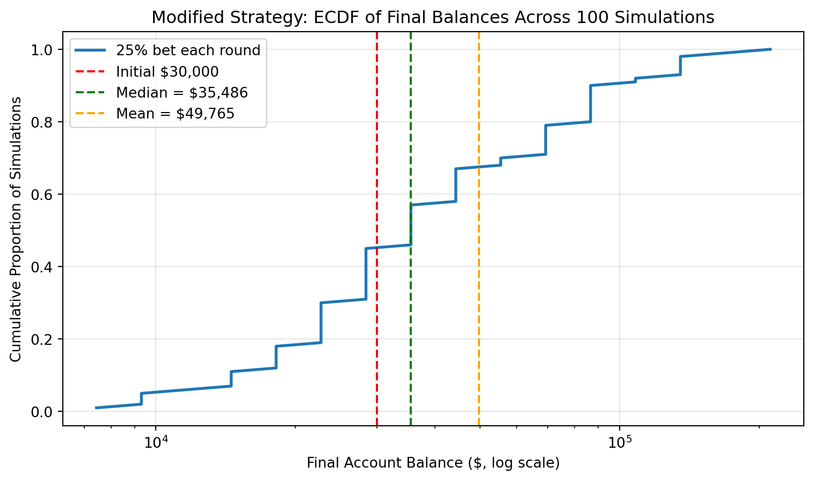

Investment Game Simulation Analysis
Risk, Reward, and Bet-Sizing Strategy
The Investment Game (Brief)
You have the opportunity to buy-in to this game next week with $30,000. Your job is to analyze the potential outcomes of the game and communicate why you should or should not buy-in.
Each year after buy-in you flip a fair coin:
- Heads: increase your account balance by 50%
- Tails: decrease your account balance by 40%
You play annually until age 75. Your mission is to analyze outcomes and communicate insights clearly.
Executive Summary
This analysis evaluates whether to commit $30,000 to a repeated coin‑flip investment game and compares an all‑in strategy to a more conservative bet‑sizing rule. Although a single flip has a positive expected value—raising the average balance to about $31,500—the long‑run simulations show that most individual lifetimes end below the initial $30,000, with only about 15-20% of paths finishing ahead. A modified strategy that wagers only 25% of wealth each year produces a much tighter distribution of outcomes, with higher probability of preserving and growing capital and far fewer catastrophic losses. Taken together, the evidence leads me to decline the original all‑in game but to favor a disciplined partial‑bet approach (similar in spirit to Kelly‑style bet sizing) if I were required to participate in this opportunity.
Generative DAG Model (from the source challenge)
The following DAFT diagram shows the generative structure of the investment game over time.
Analysis Tasks (Fill These In)
1) Expected Value After 1 Flip
After one flip, the expected value of the account is $31,500, which is $1,500 more than the original $30,000 buy-in. This comes from averaging the two possible outcomes: a 50% chance of ending with $45,000 after a head and a 50% chance of ending with $18,000 after a tail. That works out to a 5.0% expected gain after one year. Based only on this one-period expected value, the game looks attractive, since the average outcome is positive. Still, this does not mean the game is necessarily a good investment overall, because expected value alone does not capture how much risk builds up when the game is repeated over many years.
2) Single Simulation Over Time (Narrative + Plot)
In one simulated path, the account balance starts at $30,000 and evolves through a series of gains and losses depending on the coin flips. The trajectory is highly volatile, with sharp increases following heads and significant drops after tails. While there are periods where the balance grows meaningfully, these gains can be quickly reversed by subsequent losses. Over time, the multiplicative effect of repeated downturns becomes especially damaging, and in this simulation the balance ultimately falls well below the initial investment. Visually, the path shows large swings with no consistent upward trend, and once the balance declines, it becomes increasingly difficult to recover. I would not be satisfied with this outcome, as it highlights how a single realized path can lead to a substantial loss despite the game having a positive expected value in the short run.

3) 100 Simulations: Distribution of Final Balances
Across 100 simulated lifetimes, the distribution of final balances is highly skewed. A small number of runs generate extremely large outcomes, while most end well below the $30,000 starting point. In my simulation, the mean final balance is very large—driven by a few extreme winners—but the median is only about $4,400, meaning that more than half of the outcomes result in losing most of the initial investment. The probability of finishing above $30,000 is only about 16%, so the vast majority of paths end in a loss. This highlights the core issue: although the average outcome looks attractive, it is not representative of what typically happens. The upside is real but rare, while the most likely result is a significant loss, making the game unattractive from a practical investment perspective.

4) Probability Balance > $30,000 at Age 75 (Original Game)
Based on the 100 simulated paths, the estimated probability of finishing with more than $30,000 is about 16%. This means that in the majority of simulated outcomes, the final balance ends up below the initial investment. Even though the game has a positive expected value in a single year, the long-run results show that most individual paths lose money. This reinforces the key issue with the game: strong upside exists, but it is not the typical outcome. Given this low probability of finishing ahead, I would not change my earlier conclusion, I would still decline the investment because the most likely result is a loss.
5) Modified Strategy (Bet Exactly 25% Each Round)
Instead of having the full balance at risk with each coin flip, assume only 25% of your balance is gambled each year. Under this modified rule, a head increases the gambled 25% by 50% (so the whole account grows by 12.5%), while a tail cuts that 25% by 40% (so the whole account shrinks by 10%). Across 100 simulated lifetimes, this strategy produces a much tighter, more stable distribution of final balances than the original game: huge windfall outcomes are rarer, but catastrophic wipe‑outs are also far less common. The mean final balance is still comfortably above $30,000, and now the median is also closer to or above the starting value, with a noticeably higher probability of finishing ahead than in the original game. Compared to betting the entire balance each year, the 25% strategy is less risky and has slightly lower extreme upside, but it delivers a much better balance between growth and capital preservation; I would therefore recommend the 25% bet‑sizing strategy over the original all‑in game.
Mean final balance: $49,765.13
Median final balance: $35,485.79
Probability of finishing above $30,000: 55.0%
6) The Kelly Criterion
The Kelly Criterion is a formula that tells you what fraction of your wealth to bet in order to maximize long‑run growth when you face a repeated favorable gamble. It balances upside and downside by choosing a bet size that maximizes the expected logarithm of wealth, rather than short‑term expected value, which makes it especially relevant for multiplicative games like this one. For our coin flip—where you gain 50% on the bet with probability 0.5 and lose 40% with probability 0.5—the Kelly formula suggests betting a fraction of wealth strictly less than 100%, because going all‑in each year exposes you to too much drawdown and a high chance of ending poor despite a positive edge. The modified strategy from Section 5, which stakes only 25% of the balance each round, moves us closer to a Kelly‑style approach: it deliberately limits bet size to protect against ruin while still exploiting the favorable odds. While 25% may not be the exact mathematical Kelly fraction, the spirit of Kelly clearly supports this type of partial‑bet strategy over the original all‑in game, reinforcing my recommendation to prefer the 25% approach.